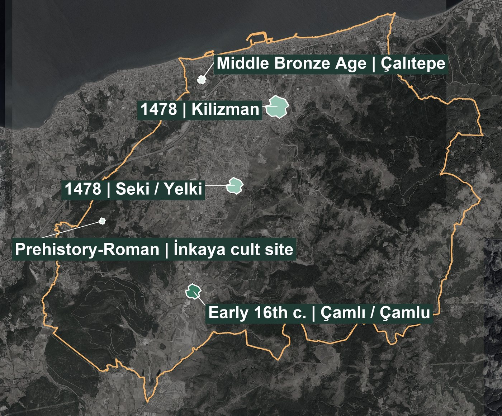
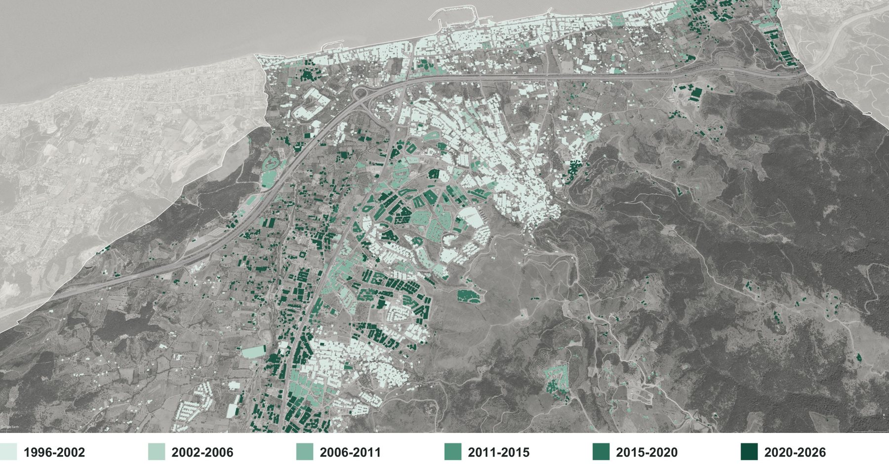
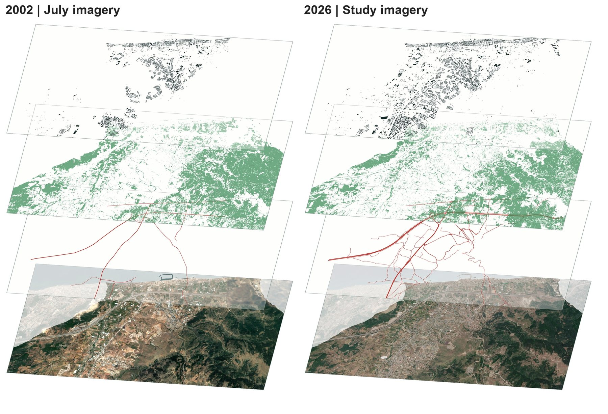
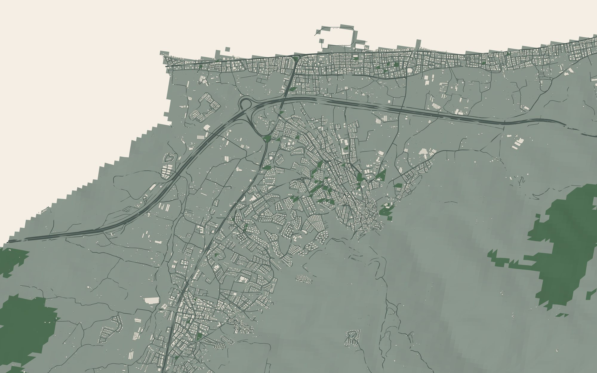
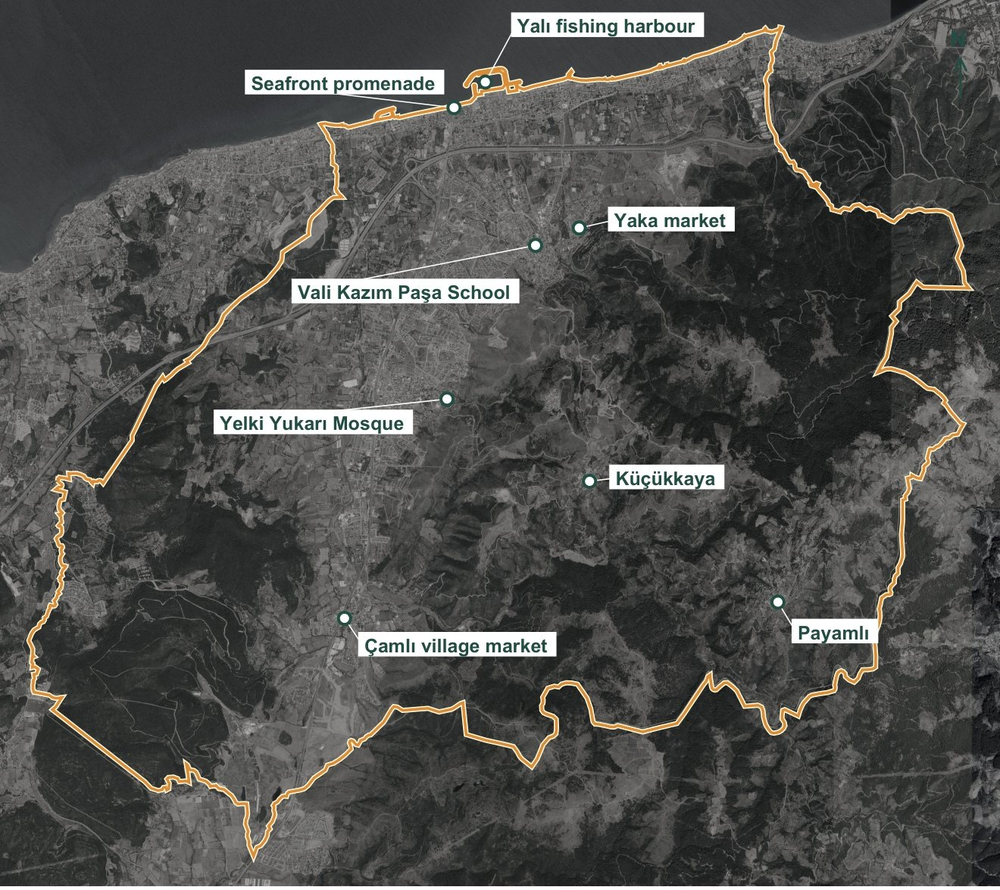
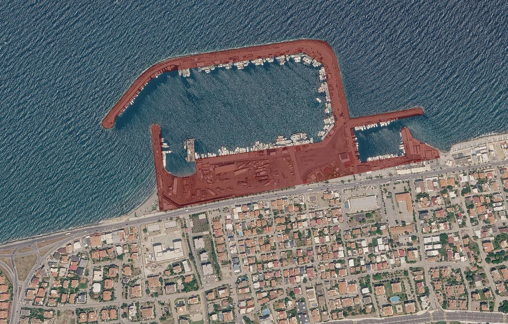
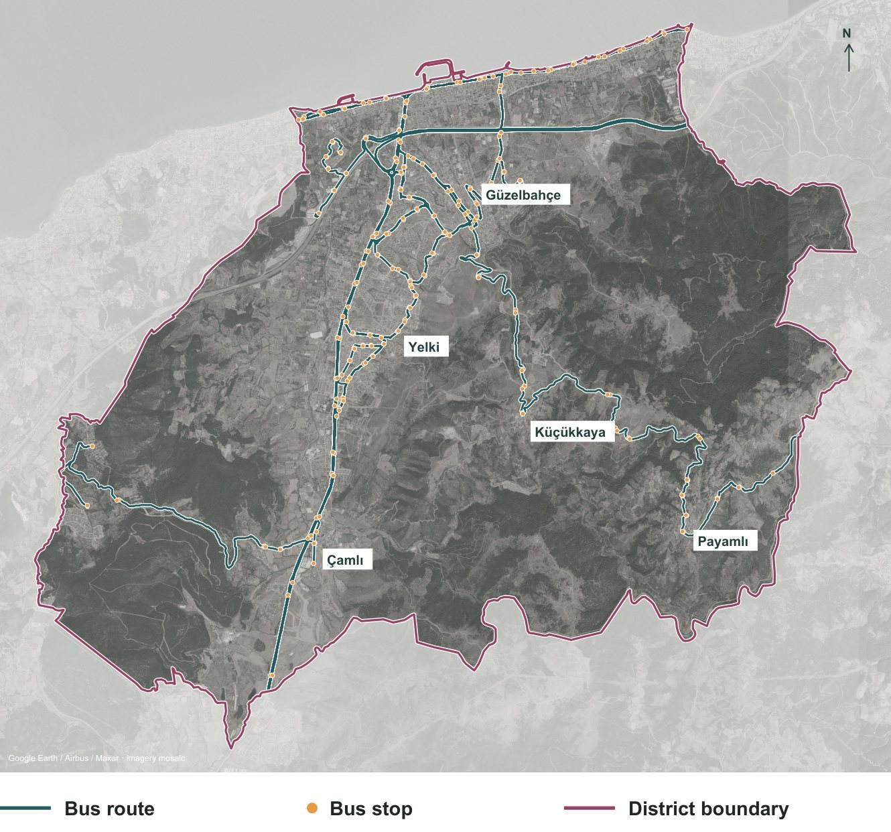
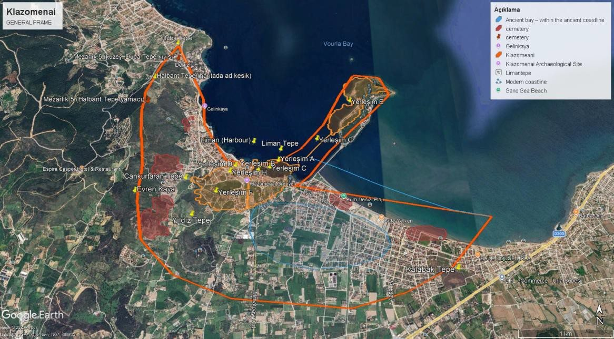

Kent Tarihi ve Kimlik
Klazomenai'den bugüne yerleşim, tarihî haritalar, nüfusun uzun dönemli değişimi, kentsel gelişim ve kent kimliği
Klazomenai'den Bugüne
Antik Çağ, Osmanlı, Cumhuriyet ve 2000 sonrası: yerleşimi ve yönetsel konumu değiştiren olaylar
- Antik ÇağTunç Çağı – MS 7. yüzyıl
- Erken Tunç ÇağıLimantepeKörfezin bu dönemdeki en önemli yerleşimi: 3,5 m yüksekliğinde, at nalı biçimli kulelerle güçlendirilmiş surlarla çevrili bir köy.Bölgesel bağlam · Urla
- Orta Tunç ÇağıÇaltepeBugünkü ilçe sınırındaki en erken yerleşim kanıtı. İnkaya ise köy değil, kült alanı olarak tanımlanır.
- MÖ 525–520Klazomenai'ye dönüşHalk ana yerleşim alanına döndü; sanayi ve ticaret yeniden canlandı.Bölgesel bağlam · Urla
- MÖ 498Karantina Adası'na sığınmaİyon isyanına Pers ordusunun karşılığı üzerine halk adaya sığındı; ana karada en az bir yüzyıl kalıntıya rastlanmadı.
- Hellenistik–RomaAda yerleşimiAdadaki yerleşim MS 5. yüzyıl başına dek sürdü. Ana karada Roma çiftlik evlerinin duvar izleri bulundu; en geç çanak çömlek MS 6.–7. yüzyıla ait.
- Orta Çağ ve Osmanlı11.–19. yüzyıl
- 1080'lerÇaka BeyTürkler Çaka Bey ile Ege'ye ulaştı ve Klazomenai gibi kıyı kentlerini aldı. Ardından yaklaşık iki yüzyıl Türk–Bizans mücadelesi sürdü.
- 1478İlk ayrıntılı kayıtII. Mehmed dönemi tahrir defterinde Seki ve Yelki köyleri Kilizman'a bağlı. Tahmini nüfus: Kilizman 408, Seki/Yelki 389.
- 1528Padişah hassıKanuni dönemi defterinde bölge padişahın has toprakları arasında. Çamlı ilk kez kayıtta: 888 kişi.
- 1575Nüfus değişimiKilizman 348 kişiye indi (−%14,7), Seki/Yelki 545 kişiye çıktı (+%40,1).
- 1845Tahtacı kayıtlarıKilizman'da 4 çadır ve 16 erkek, Çamlı'da 20 çadır ve 43 erkek. Bunlar topluluk alt kümeleridir, köy toplamı değildir.
- 1891–1892Dört köyBugünkü ilçedeki Kilizman, Yelki, Payamlı ve Çamlı: 1.630 kişi ve 383 yapı (Aydın Vilayeti Salnamesi).
- Cumhuriyet1923–1999
- 1923–1926MübadeleYunanistan'dan (Girit, Selanik, Manastır vb.) gelen mübadiller, ayrılan gayrimüslim nüfusun yerine yerleştirildi.
- 1930'larKilizman'dan Kızılbahçe'yeYerleşim Urla'ya bağlı bucak oldu ve Kızılbahçe adını aldı. Raporlar bu değişikliği 1928–1929 ve 1936 olarak farklı tarihlerle verir.
- 1933Vali Kazım Paşa İlkokuluResmî MEB kaydına göre okul 1933'te açıldı; bugün ilçenin tanınan sivil simgelerinden.
- 1950'lerKıyıya yönelişKaradeniz'den gelen göçmenler balıkçılıkla yerleşti; kıyıda sayfiye evleri ve gazinolar yapıldı. Yerel olarak "veba" denen bir salgından sonra yerleşimin odağı kıyıya kaydı.
- 1954Belediye kurulduYerleşim belediye örgütlenmesine kavuştu.
- 1957–1958Güzelbahçe adıSoğuk Savaş ikliminde "Kızıl" sözcüğünden duyulan rahatsızlık üzerine ad Güzelbahçe oldu ve belediye İzmir Merkez ilçesine bağlandı. Raporlarda 1957 ve 1958 olarak geçer.
- 1960–1965Bucak nüfusuBucak ve köylerinin toplam nüfusu 4.978'den 5.515'e çıktı (yaklaşık %10,8).
- 1978Su Ürünleri KooperatifiS.S. Güzelbahçe Su Ürünleri Kooperatifi kuruldu; avlama, depolama ve pazarlamada balıkçılara hizmet veriyor.
- 1980Belediye kaldırıldı1980 askerî darbesinin ardından belediye kaldırıldı; Güzelbahçe İzmir Belediyesi'ne bağlandı.
- 1984–1997İzmir–Çeşme OtoyoluOtoyol gelişmeyi hızlandırdı ve yazlıklar kalıcı konuta dönüştü. 1990'lardan itibaren kooperatiflerle binlerce konut yapıldı.
- 1992NarlıbahçeGüzelbahçe ve Narlıdere "Narlıbahçe" adıyla birleştirildi; halk açlık grevi ve çadır eylemleriyle karşı çıktı.
- 1993Bağımsız ilçeGüzelbahçe ayrı ilçe oldu; kaymakamlık 1994'te çalışmaya başladı.
- 1998–2008Yelki BelediyesiYelki, Atatürk ve Cumhuriyet mahalleleriyle belde belediyesi oldu; 5747 sayılı Kanun'la 2008'de Güzelbahçe'nin mahallesine dönüştü.
- 2000 sonrası2000–2026
- 2003–2008Yarımada OyunlarıBinlerce katılımcıyla düzenlenen oyunlar ilçenin tanıtımına katkı sağladı. 2003'teki deneme vapur seferleri ise bürokratik engeller nedeniyle sürdürülemedi.
- 2000'lerEğitim odağıKapalı site tipi konut projeleriyle birlikte ilçe, özel okulların yoğunlaştığı bir eğitim odağına dönüştü.
- Ekim 2015Yalı Balıkçı Barınağı30.000 m² alanda, 250 tekne kapasiteli barınak açıldı ve kıyının kullanımını yeniden biçimlendirdi.
- 202539.474 kişiKullanılan en güncel nüfus değeri; 2000'den bu yana %117,0 artış.
Araştırma grubunun kent tarihi ve kimlik raporları; Berber ve Saygı (2013), Pınar (2012), Koparal (2011), Herodotos ve Klazomenai kazı yayınları. Erken Osmanlı nüfusları hane × 5 + bekâr erkek hesabıyla yapılmış tahminlerdir.
Haritalarla Güzelbahçe
Erken yerleşimlerden 1996 hava mozaiğine: araştırma grubunun işaretlediği tarihî haritalar ve hava fotoğrafları

BüyütErken yerleşimlerOrta Tunç Çağı Çaltepe, İnkaya kült alanı ve Osmanlı kayıtlarındaki Kilizman (1478), Seki/Yelki (1478) ve Çamlı (16. yüzyıl başı). Lekeler şematiktir; tarihî yerleşim alanını ölçmez.
Araştırma grubu; arkeolojik kanıt Koparal (2011), Osmanlı kayıtları Berber ve Saygı (2013). Altlık: Google Earth Pro; ilçe sınırı: OpenStreetMap katkıcıları (2026).
Piri Reis haritası (geç kopya)İzmir Körfezi çevresinde Sancak Kale ve bugünkü Güzelbahçe'nin yaklaşık konumu işaretlendi. El yazması, 17. yüzyıl sonu – 18. yüzyıl başına tarihlenen bir kopyadır.
Walters Art Museum, W.658.68B (CC0); iç görsel Tournefort (1717). Daire, ok ve etiketler araştırma grubuna ait.
Roux: İzmir KörfeziDenizcilik haritası üzerinde bugünkü çalışma alanı (turuncu) ile Kilizman, Buladan, Yelki ve Çamlı. Hizalama yaklaşıktır; harita kadastro planı değil, seyir haritasıdır.
J. Roux (1764), Golfe de Smirne, Pl. 105; David Rumsey Map Collection. İşaretler araştırma grubuna ait.
Roux: kıyı yerleşimleriKörfez çevresindeki adlandırılmış kıyı yerleşimleri işaretlendi. Simgeler yapı sayısı ya da ölçülmüş yerleşim büyüklüğü olarak okunmadı.
J. Roux (1804), Pl. 58; Aikaterini Laskaridis Vakfı, Travelogues. Kırmızı daireler araştırma grubuna ait.
Kiepert: Batı AnadoluKilizman, Yelki, Urla ve çevre yerleşimler; tarihî yer adları kıyı yolları ve iç köylerle ilişkilendirildi.
H. Kiepert (1890), Dietrich Reimer, Berlin; SALT Araştırma. Kırmızı işaretler araştırma grubuna ait.
Hava fotoğrafı katmanları1963 hava fotoğrafı üzerinde 1957 (açık yeşil), 1963 (orta yeşil) ve 1966 (koyu yeşil) kaynaklarından yerleşim lekeleri: Kilizman/Yaka, Yelki, Çamlı, Payamlı ve Küçükkaya.
Araştırma grubu; 1957 yorumu Etlacakuş (2025), 1963 hava fotoğrafı ve 1966 haritası İzmir Kent Rehberi.
Kent Rehberi haritasıGüzelbahçe ve çevre köyler 1966 katmanında; tarihî nüfus birimlerini arazideki yerleşimlerle ilişkilendirmek için kullanıldı.
İzmir Büyükşehir Belediyesi, İzmir Kent Rehberi, "Deniz derinliği (1966)" katmanı. 1966 katman etiketidir.
Hava mozaiğiKıyı–Yelki penceresinde görünen yerleşim kümeleri (yeşil). Siyah alanlar mozaikteki boşluklardır, boş arazi değildir.
Araştırma grubu; İzmir Kent Rehberi 1996 hava fotoğrafları. Turuncu çizgi bugünkü ilçe sınırıdır.
Bugünkü ilçe sınırı tarihî haritalara yalnızca karşılaştırma için yaklaşık olarak işlendi; tarihî bir yönetsel sınırı ya da eski bir köyün ölçülmüş alanını göstermez. Haritalar arasında ← → tuşlarıyla geçilebilir.
Nüfusun Uzun Dönemli Değişimi
Osmanlı tahminleri, erken Cumhuriyet sayımları ve 1990–2025 ilçe nüfusu · Farklı birimler ayrı grafiklerde
Erken Osmanlı Dönemi Nüfus Tahminleri
Hane × 5 + bekâr erkek (Berber ve Saygı, 2013, s. 57–59). Çamlı için 1478 kaydı yok; sıfır değil, eksik veri.
Erken Cumhuriyet: Bugünkü İlçedeki Yerleşimler
1927–28 ve 1935 sayımları (Berber ve Saygı, 2013, s. 74, Tablo 11). Payamlı'nın iki yıldaki değeri kaynakta aynıdır.
Güzelbahçe İlçe Nüfusu, 1990–2025
1990 ve 2011: Berber ve Saygı (2013); 2000: sayım; 2008–2022: İZKA (2023) / TÜİK; 2010: TÜİK; 2025: MEB resmî tablosu. 2007'de Adrese Dayalı Nüfus Kayıt Sistemi'ne geçildiği için seri tam türdeş değildir.
Nüfus Endeksi: Komşu İlçeler ve İzmir (2000 = 100)
Endeks, aşağıdaki tablodaki nüfuslardan hesaplandı hesap. İdari sınırlar sabit sınırlara göre yeniden kurulmadı.
Bugünkü İzmir İl Alanı İçin Model Tahmini
HYDE 3.2.1 nüfus ızgarasının bugünkü il sınırı içinde toplanmasıyla yapılan model yeniden kurgusu; sayım değildir ve en yakın 1.000'e yuvarlanmıştır. Köy ölçeğinde tahmin için kullanılamaz.
Nüfus ve Toplam Değişim, 2000–2025
| Alan | 2000 | 2010 | 2020 | 2025 | Değişim |
|---|---|---|---|---|---|
| Güzelbahçe | 18.190 | 24.462 | 36.727 | 39.474 | +%117,0 |
| Narlıdere | 54.107 | 72.832 | 65.178 | 61.320 | +%13,3 |
| Urla | 49.269 | 52.500 | 69.550 | 82.021 | +%66,5 |
| Seferihisar | 34.761 | 32.655 | 48.320 | 63.712 | +%83,3 |
| İzmir ili | 3.370.866 | 3.948.848 | 4.394.694 | 4.504.185 | +%33,6 |
Değişim, 2000–2025 toplam yüzde değişimidir; yıllık hız değildir. Güzelbahçe'nin il nüfusundaki payı %0,54'ten %0,88'e çıktı. Kaynak: İZKA ve DEÜ (2013), İBB, TÜİK verisi aktaran kaynaklar, MEB (2026).
Kentsel Gelişim, 1996–2026
Altı dönemlik yerleşim sentezi, 2002 ve 2026 katman karşılaştırması ve ilçe ölçeğinde kütle modeli

Araştırma grubu; Google Earth Pro, OpenStreetMap ve Microsoft bina izleri. İlk grup 1996 öncesi yapıları da içeren temel gruptur. Sonuç yaklaşık bir okumadır; doğrulanmış yapım yılı kaydı değildir.

Yukarıdan aşağıya: bina izleri, görünür yeşil örtü, ana yol aksları, uydu görüntüsü. Yeşil örtü RGB yorumudur; NDVI ya da ağaç sayımı değildir.

Arazi 60 m aralıkla örneklendi (Tilezen). Şematik kütle modelidir; 2026 için ölçülmüş bir yeniden kurgu değildir. Etkileşimli modeller için 3B Modeller.
Kent Kimliği
Çalışan kıyıdan köy meydanına: kimliği taşıyan sekiz yer, ulaşım bağlantıları ve bölgesel miras

Araştırma grubu. Barınak işareti iskele yerine liman havzasına düzeltildi; okul konumu MEB kaydına, Yelki camisi Kültür Envanteri'ne göre doğrulandı. Köy işaretleri merkezleri gösterir.
Kimliği Taşıyan Sekiz Yer
Yalı Balıkçı Barınağı
Balıkçılık ve denizle gündelik temas
Sahil promenadı
Kıyı boyunca ortak kamusal alan
Vali Kazım Paşa Okulu
1933'ten bu yana sivil simge
Yaka pazarı
Eski yerleşim çekirdeğinde pazar sokağı
Yelki Yukarı Camii
Yelki çekirdeğinde ortak mekân
Çamlı köy pazarı
Ortak fırın ve yerel üretim
Küçükkaya
Ormanlık yamaçlar ve körfez manzarası
Payamlı
Köy yaşamı ve Bardacık Festivali

Araştırma grubu; Google uydu görüntüsü. Barınak tekne bakım ve onarım alanları da içerir; zabıta balık tazeliğini ve fiyatları denetler.

Araştırma grubu; ESHOT açık verisi (18 Kasım 2026). Harita ağın dağılımını gösterir; sefer sıklığını göstermez. Hat ayrıntıları için ESHOT.
Bölgesel miras ve kültürel katmanlar

Araştırma grubu; uydu görüntüsü üzerine uyarlama. Klazomenai, Limantepe ve Karantina Adası Urla'dadır; Güzelbahçe için bölgesel bağlam olarak verilir.
Kültürel Katmanlar
İnkaya Mağarası
Yelki'de, Kocadağ'ın doğu yamacında kuru mağara: 222 m uzunluk, girişin 30 m altına iner; sıcaklık girişte 18 °C, içeride 22 °C. Kireçtaşında fay hatları boyunca oluşmuş; kült alanı.
Tahtacı kültürü
1845 kayıtlarında Kilizman ve Çamlı'da Tahtacı toplulukları; bugün Yaka'da Tahtacı Kültür Merkezi bulunuyor.
Termal miras
Gülbahçe Ilıcası (Urla) ve Agamemnon kaplıcaları (Balçova) bölgesel karşılaştırma için incelendi; Güzelbahçe sınırı dışındadır.
Zeytinyağı geleneği
Klazomenai'deki antik zeytinyağı işliği bölgesel bağlamdır; Kilizman'daki zeytinyağı fabrikasının 1908'de modernleştirildiği kayıtlıdır.
Kültür ve Turizm Bakanlığı, Tabiat Varlıklarını Koruma Genel Müdürlüğü, Özbay ve diğ. (2024), Berber ve Saygı (2013). İlçedeki tescilli varlıklar için Havza ve Koruma.
Bir Şehir Plancısının Gözünden
Güzelbahçe Belediyesi'nde görevli bir şehir ve bölge plancısıyla yapılan görüşmeden
Güzelyalı'ya sığamayanlar Balçova'ya gitti, Balçova'ya sığamayanlar Narlıdere'ye gitti, Narlıdere'ye sığamayanlar ise Güzelbahçe'ye geldi.
Akşamları burası adeta bir otel ilçesi gibi kullanılıyor; sosyal hayata ayrılabilecek pek fazla yer yok.
Tarım alanı olarak mı devam edilecek yoksa konuta mı evrilecekti; ne yazık ki tamamen konuta evrilmiş durumda.
Güzelbahçe'nin kesinlikle bir sembole ihtiyacı var.
Görüşmeden Öne Çıkan Başlıklar
Alıntılar görüşmenin Türkçe özgün metninden aynen alınmış kesitlerdir; görüşler kişiye aittir ve kurumsal bir değerlendirme değildir.
Veri Kaynağı: Araştırma grubunun "Spatial Formation, Urban History and Morphology" ile "Location and Urban Identity" raporları (Kasım 2026) · Berber ve Saygı (2013), Tarih Öncesinden Günümüze Güzelbahçe Tarihi · Pınar (2012) · Koparal (2011) · Etlacakuş (2025) · Klein Goldewijk (2017), HYDE 3.2.1 · İZKA ve DEÜ (2013) · İZKA (2023) · TÜİK · MEB (2026) · İzmir Kent Rehberi · ESHOT açık veri · OpenStreetMap katkıcıları · Walters Art Museum · David Rumsey Map Collection · SALT Araştırma